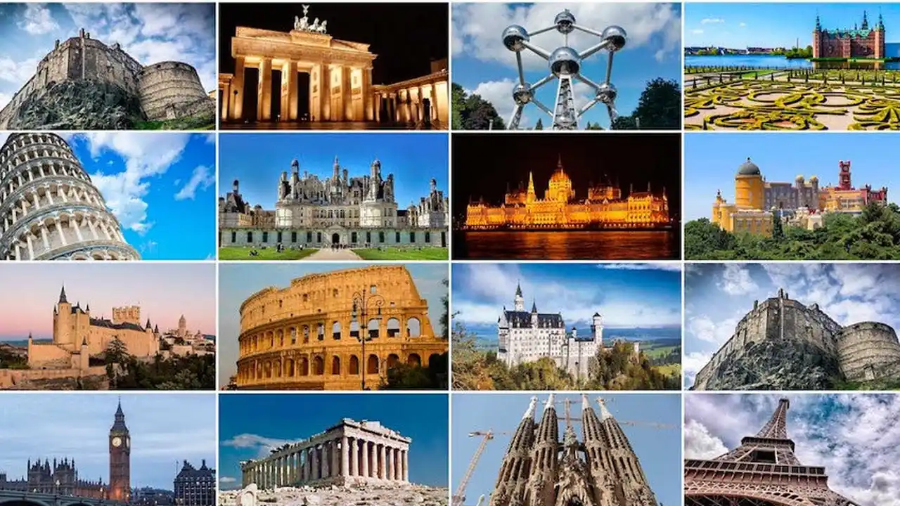
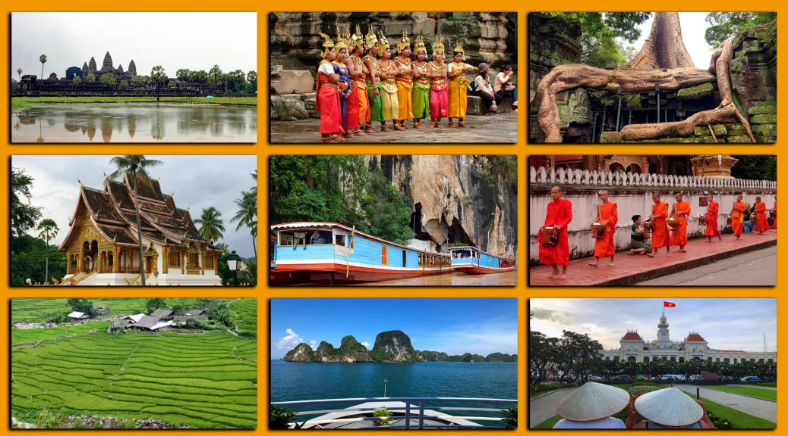
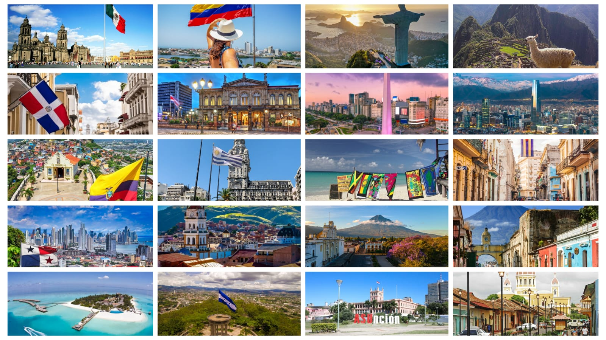

Descubre el mundo, crea recuerdos.
Tu próxima aventura comienza aquí
Descubre destinos increíbles, vive experiencias únicas y crea recuerdos inolvidables. Te acompañamos a explorar los rincones más fascinantes del mundo, desde ciudades históricas y playas paradisíacas hasta paisajes naturales que te dejarán sin palabras. Encuentra inspiración para tu próxima aventura y comienza a hacer realidad el viaje que siempre soñaste.
Europa: un continente lleno de historia, cultura y paisajes inolvidables
Europa es un continente lleno de historia, cultura y paisajes increíbles. Desde las elegantes avenidas de París hasta los monumentos históricos de Roma, cada destino ofrece experiencias únicas para descubrir. Sus ciudades combinan tradición y modernidad, mientras que sus castillos, museos, montañas y costas cautivan a viajeros de todo el mundo. Además, la gastronomía europea es una experiencia en sí misma, con sabores y recetas que reflejan la identidad de cada país. Ya sea que sueñes con recorrer Barcelona, navegar por los canales de Ámsterdam o admirar la arquitectura de Praga, Europa ofrece opciones para todos los gustos y estilos de viaje. Vive nuevas experiencias, conoce culturas fascinantes y crea recuerdos inolvidables en uno de los destinos más apasionantes del mundo. ¡Europa te espera!

Asia: un continente de maravillas y contrastes
Asia es un destino fascinante donde la tradición y la modernidad conviven en perfecta armonía. Desde los impresionantes rascacielos de Tokio hasta los templos históricos de Bangkok, cada lugar ofrece una experiencia única. Sus paisajes incluyen playas paradisíacas, montañas imponentes, ciudades vibrantes y sitios culturales milenarios. Además, su variada gastronomía, sus costumbres y su riqueza histórica convierten cada viaje en una aventura inolvidable. Ya sea que desees explorar Singapur, descubrir la energía de Seúl o admirar los tesoros culturales de Pekín, Asia tiene algo especial para cada viajero. Déjate sorprender por la diversidad, la belleza y la magia de Asia. ¡Tu próxima gran aventura te espera!

Latinoamérica: cultura, naturaleza y aventura
Latinoamérica es una región llena de diversidad, paisajes espectaculares y tradiciones que enamoran a cada visitante. Desde las playas del Caribe hasta las montañas de los Andes, cada destino ofrece experiencias únicas y auténticas. Sus ciudades vibrantes, su rica historia, su música, su gastronomía y la calidez de su gente convierten cada viaje en una experiencia inolvidable. Además, cuenta con maravillas naturales y culturales que atraen a viajeros de todo el mundo. Puedes descubrir lugares increíbles como Río de Janeiro, Cartagena, Buenos Aires y Ciudad de México, cada uno con su encanto y personalidad. Vive la pasión, los colores y la energía de Latinoamérica. ¡Una región llena de experiencias inolvidables te espera!
